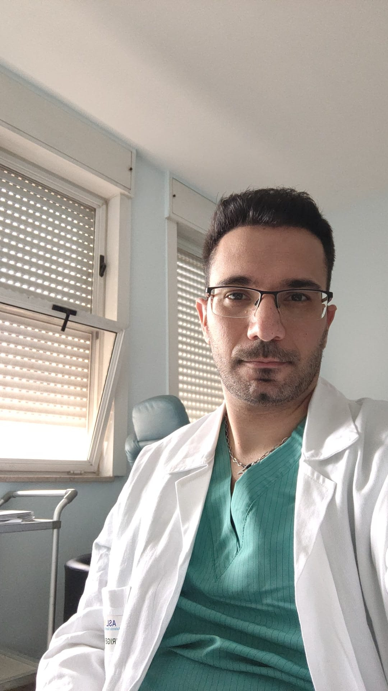

Lo studio del Dott. Bartolomeo D'Amora è il punto di riferimento ortopedico del territorio. Diagnosi accurate prima dei trattamenti, tecniche avanzate come ozonoterapia e protesi articolari, e soprattutto un medico che ascolta.

Qui non vedrai mai "l'anca del letto sette". Vedrai Maria, che ha paura di non riprendere a camminare con la nipote. Vedrai Antonio, che dopo l'incidente vuole solo tornare in palestra. Vedrai te stesso, con la tua storia, i tuoi tempi, le tue domande. La diagnosi viene prima del trattamento. L'ascolto viene prima della diagnosi.
150+ recensioni verificate su MioDottore. Tutte reali, tutte a 5 stelle, nessuna inventata: qui sotto ne trovi solo una selezione.
"Visita molto accurata spiegazioni esaustive molto empatico e rassicurante"
"Medico molto competente, professionale e disponibile. Mi ha ascoltata con attenzione, spiegandomi tutto con chiarezza e facendomi sentire subito a mio agio. Lo consiglio vivamente."
"dottore molto competente consiglio vivamente giovane ma ingamba"
"Una persona scrupolosa ed empatica e soprattutto molto professionale."
"Ho effettuato recentemente una visita con il Dottore e sono rimasta estremamente soddisfatta. Ha dimostrato una grandissima professionalità oltre ad essere molto preparato e attento."
"Visita accurata con spiegazioni dettagliate e chiare."
"Dottore eccezionale Professionale chiaro nelle spiegazioni empatico diagnosi e visita accurata"
Via Brindisi 12, Scafati
Salerno · Campania
Via Castriota 8, Torre Annunziata
Napoli · Campania
Una guida onesta, senza promesse miracolose, per capire quando l'ossigeno-ozono medicale è la risposta giusta al dolore articolare cronico.
Quel fastidio quando ti alzi dalla sedia, la rigidità mattutina, il dolore che si irradia all'inguine: quando è ora di fissare una visita.
Tre ortopedici lo avevano già operato di anca destra. Quando arrivò da noi per la sinistra, trovammo una strada diversa. Ecco la storia, dall'inizio.
Scegli il canale che preferisci. Ti rispondiamo personalmente, di solito entro qualche ora e comunque sempre prima di sera.